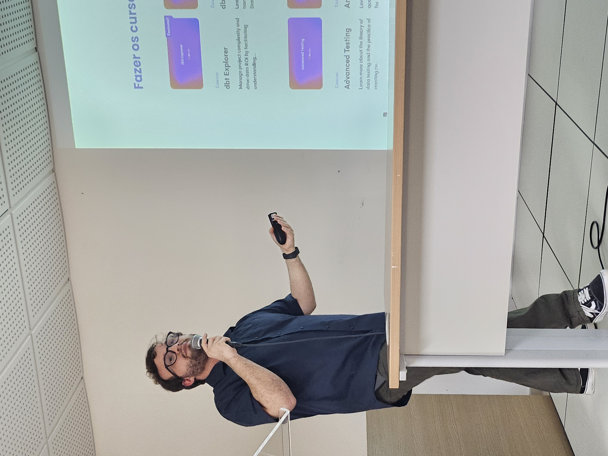

Resumo do 4º Meetup PyData Natal
Explore os principais tópicos discutidos e as novidades que marcaram o segundo encontro da comunidade PyData Natal.
Após o sucesso do terceiro encontro no Instituto Metrópole Digital - UFRN, o PyData Natal realizou seu terceiro meetup. Desta vez no IFRN- IMD, o evento contou com duas palestras sobre temas de grande relevância no mundo dos dados. Confira abaixo os materiais das apresentações, o resumo e as fotos do encontro.
4º Meetup PyData
O quarto encontro da comunidade aconteceu no dia 01 de agosto, novamente em uma quinta-feira à noite. O evento teve 76 inscritos enquanto já tempos 169 inscrições no meetup.com. A presença foi de 44 pessoas e durante o evento realizamos um sorteio de kits da Python Nordeste,com 33 participantes.
üéôÔ∏è Sobre a palestrante: Epit√°cio Dantas de Farias Filho
Doutorando e Mestre em Bioinformática. Engenheiro Biomédico. Trabalha com análises single e multi-omics, aprendizagem de máquina.
Integrando Dados Multi-Ômicos: Estratégias para Investigar Sistemas Biológicos
A integração de dados oriundos de diferentes plataformas ômicas, como genômica, transcriptômica e epigenômica, é uma abordagem essencial para aprofundar o entendimento de processos biológicos complexos. Nesta palestra, vamos apresentar caminhos para acessar, organizar e integrar esses dados utilizando ferramentas de ciências de dados. Serão discutidos os principais desafios técnicos envolvidos e estratégias computacionais que auxiliam na geração de hipóteses e na extração de padrões relevantes para a biologia molecular.

üéôÔ∏è Sobre a palestrante:  [Emanuel Betcel]
Formado em Tecnologia da Informação na UFRN, possui 5+ anos de experiência trabalhando com dados, tendo atuado em projetos de engenharia em grandes empresas como Itaú, Rede Globo, Cielo e Raia Drogasil. Atualmente é Engenheiro de Dados na Localiza e aluno do mestrado em Ciência, Tecnologia e Inovação da UFRN e organizador do PyData Natal.
dbt (data build tool): Da Teoria ao Primeiro Modelo
Nesta atividade, o Engenheiro de Dados Emanuel Betcel irá explorar o dbt (data build tool), uma ferramenta fundamental para a transformação de dados no ambiente moderno de data warehousing. Serão abordados os conceitos essenciais do dbt e como ele se integra ao fluxo de trabalho de um time de dados, permitindo a escrita de SQL de forma mais eficiente e organizada.
Apresenta-se a importância da modelagem de dados com SQL, a implementação de testes para garantir a qualidade dos dados e a geração automática de documentação, aspectos cruciais para a governança e colaboração em equipes de dados. O objetivo é mostrar como o dbt potencializa o desenvolvimento de pipelines de dados robustos e escaláveis, desde os princípios básicos até suas funcionalidades que facilitam o dia a dia de analistas e engenheiros.
Nossa organização é aberta no github. Temos issues abertas, assim como um kanban, para que nossa comunidade possa discutir e também contribuir para o seu crescimento e melhoria.
Fazemos questão de relembrar que a PyData possui um código de conduta que promove a inclusão: “Seja gentil com os outros. Comporte-se profissionalmente. Lembre-se de que assédio e piadas com conotação sexista, racistas ou excludentes não são tolerados no PyData. Toda comunicação deve ser apropriada para um público profissional, incluindo pessoas de diversas origens.
PyData se dedica a fornecer uma experiência de evento livre de assédio para todos, independentemente de gênero, orientação sexual, identidade e expressão de gênero, deficiência, aparência física, tamanho corporal, raça ou religião. Não toleramos qualquer forma de assédio aos participantes.
Obrigado por ajudar a tornar esta comunidade acolhedora e amigável para todos!”
A versão inteira do código de conduta pode ser encontrado aqui.
Agradecimentos
Agradecemos a todos que compareceram ao evento, especialmente aos palestrantes. Também aproveitamos para deixar o convite a quem se interessar em participar dos próximos meetups, independente do nível de conhecimento ou área de atuação, todas as pessoas são bem-vindas!